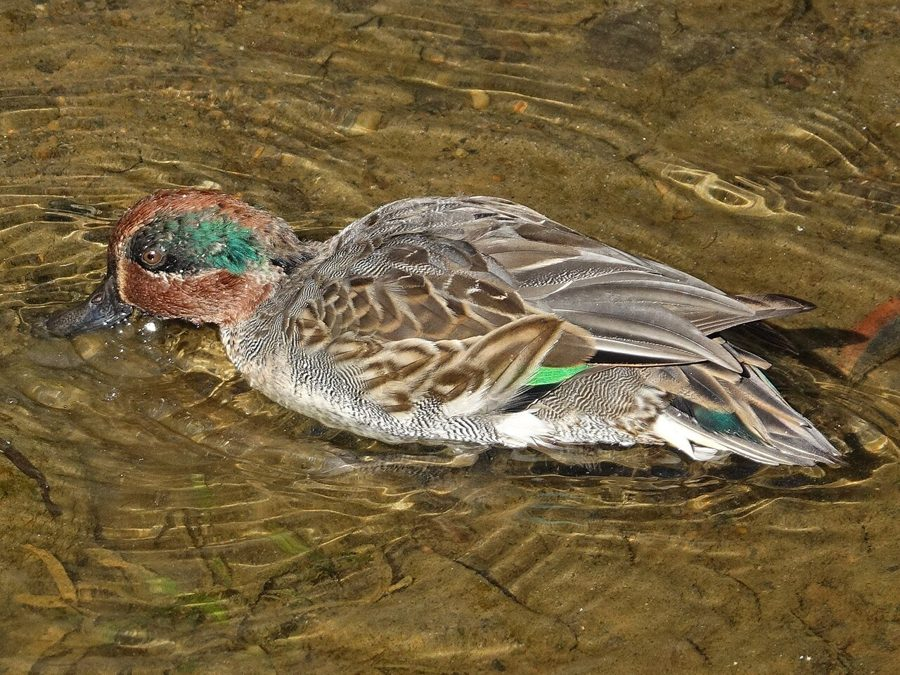

छोटी मुर्गाबीCommon Teal
Anas crecca · Anatidae · BRD-0094

- Scientific name
- Anas crecca Linnaeus, 1758
- Family
- Anatidae
- Hindi
- छोटी मुर्गाबी
- Local names
- chhoti murgabi, choti murgabi, murgabi, pata, teal
- Status here
- native
- Movement
- Winter visitor
- IUCN
- LC
- Review
- audited and independently read
When to look कब देखें
Winter visitor शीतकालीन प्रवासी. Expected mainly in October, November, December, January, February, March, April.
Arrives in October–November from northern breeding grounds; departs by March–April. Expected along the Ghaghra and Rapti river systems and larger water bodies. All migrants and visitors →
Uses and possibilities उपयोग और संभावनाएँ
Guide: Where the winter birds are: Bakhira, Parvati Arga and the Ayodhya jheels
Drawn from the documented uses in the profile below, where each is labelled traditional, current or a research lead. All uses →
छोटी मुर्गाबी / Common Teal
Anas crecca Linnaeus, 1758 — Anatidae
छोटी मुर्गाबी — ठंड के मौसम में मध्य एशिया और साइबेरिया से आने वाली सबसे छोटी हंस, जो पूर्वी उत्तर प्रदेश में अक्टूबर से अप्रैल तक तालाबों, पोखरों और नदियों के पास पाई जाती है। इसके सिर पर गहरी हरी पट्टी (नर में) और सफेद पेट इसे तुरंत पहचान देते हैं। ये हंस पानी की सतह पर सिर्फ अनाज और पानी की घास खाने के लिए ही जल में प्रवेश करती हैं, और बहुत सतर्क रहती हैं।
Quick Identification त्वरित पहचान
| Feature | Description |
|---|---|
| Size | Smallest duck species in region; 34–38 cm long |
| Male plumage | Chestnut head with glossy green eye-stripe; grey body; white chest |
| Female plumage | Mottled brown; grey bill; subtle pale cheek spot |
| Bill | Small, dark grey; slender |
| Legs | Yellow-grey; placed far back on body |
| Behaviour | Dabbles at surface; often in tightly-packed flocks; very wary |
| Flight | Fast, erratic; flashes white wing patch |
Field tip: The smallest duck species in eastern UP, with flocks of small dabbling ducks together at the water's edge during winter — look for the male's chestnut head and green eye-stripe. Females are trickier but show the pale cheek. Extremely alert; approaches cautiously.
हिंदी — कैसे पहचानें:
सबसे छोटी हंस; सर्दी में झुंड में दिखता है।
नर का सिर लाल-भूरा, आँख की रेखा हरी।
बहुत सतर्क पक्षी; आसानी से डर जाता है।
तालाब के किनारे पानी की घास खाता है।
Morphology आकारिकी
Biometrics:
| Measurement | Range |
|---|---|
| Total length | 340–380 mm |
| Wing (flattened chord) | 178–200 mm |
| Tail | 80–100 mm |
| Bill | 32–40 mm |
| Tarsus | 28–35 mm |
| Weight | 280–360 g |
Size: 34–38 cm long; wingspan 58–67 cm. Weight 280–360 g. The smallest dabbling duck in the region.
Plumage (male): Distinctive. Head deep chestnut-brown with glossy metallic green stripe extending from eye around the back of head. Breast and forebody white or cream. Back grey; rump darker with bright yellow stripe on either side of tail. Wing coverts grey; speculum (wing patch) glossy green.
Plumage (female): Mottled greyish-brown overall. Head darker brown. Subtle pale patch on cheek (distinguish from Mallard female). Underparts white or buff. Speculum similar to male, metallic green.
Bill: Small, dark grey, slender and pointed — adapted for dabbling.
Legs and feet: Yellow-grey; placed far back on body, typical of dabbling ducks.
Eyes: Dark; small and alert.
Sexes: Highly dimorphic. Males dramatically more colourful than females.
Juveniles: Similar to females but duller.
Vocalisations. Call repertoire:
- Drake call: A distinctive whistled creep or krit-it, given in flight and when courting; frequency 2.0–3.0 kHz.
- Duck (female) call: A sharp quacking quack-quack, repeated rapidly; frequency 1.5–2.5 kHz.
- Contact calls: Soft whistles and grunts between pair members on water.
हिंदी: नर की तीक्ष्ण सीटी जैसी आवाज़ "क्रीप"। मादा तेजी से "क्वैक-क्वैक" करती है।
Behaviour & Ecology व्यवहार और पारिस्थितिकी
Dabbling forager: Common Teal are dabbling ducks that feed at the water surface or in shallow water, up-ending to reach aquatic vegetation but never diving. They feed on:
- Aquatic plant seeds and shoots
- Sedge and grass seeds
- Aquatic insects and small invertebrates
- Rice and grain spilled in stubble fields
Social behaviour: Highly gregarious, particularly in winter. Form tight flocks of 20–100 or more birds on lakes and reservoirs. Within flocks, males and females tend to separate during the day.
Feeding time: Primarily crepuscular (dawn and dusk) feeders; also feed at night, particularly in response to moonlight.
Predators: Golden Eagles, Steller's Sea Eagles, marsh harriers, and wild boar may take ducks. Chicks vulnerable to weasels, crows, and fish eagles.
Swimming: Floats high on water; strong swimmers despite small size.
Alert and wary: One of the wariest duck species. Entire flocks take flight at the slightest disturbance.
हिंदी: झुंड में रहने वाली चिड़िया। पानी की ऊपरी घास खाती है। बहुत सावधान; एक आवाज़ पर पूरा झुंड उड़ जाता है।
Life Cycle / Phenology जीवन चक्र
Winter visitor: Absent during breeding season (April–August); returns to eastern UP from October and remains through March.
Arrival and departure: First flocks arrive in October; numbers peak in January–February; departure begins in March, with most birds gone by April.
Courtship: Takes place on wintering grounds in winter. Highly ritualized; males perform head-bobbing, whistle calls, and synchronized swimming displays.
Roosts: Nocturnal roosts on open water of large lakes and reservoirs; flocks gather at dusk. Day rest sites in shallow, vegetation-rich ponds.
Moult: Complete moult occurs before arrival at wintering grounds; eclipse plumage acquired and replaced with breeding plumage during stay.
हिंदी: अक्टूबर में आता है, अप्रैल तक रहता है। सर्दी में जोड़े बनते हैं। बड़ी झीलों पर रात बिताता है।
Host Plants or Prey आहार
| Food Type | Examples | Feeding Behaviour |
|---|---|---|
| Aquatic plant seeds | Sedges (Carex sp.), grasses | Dabble at surface or shallow up-end |
| Aquatic insects | Dragonfly nymphs, water beetles | Pick from surface and vegetation |
| Floating vegetation | Pondweed (Potamogeton), water lily shoots | Pull and eat floating leaves |
| Grain | Rice from stubble fields | Glean on land after harvest |
हिंदी: पानी की घास और अनाज खाता है। पानी की ऊपरी सतह से चुनकर खाना निकालता है।
Predators / Natural Enemies शत्रु
- Avian predators: Golden Eagles, Steller's Sea Eagle, Marsh Harrier, Peregrine Falcon, Grey Heron (for chicks)
- Mammalian predators: Wild boar, domestic dog, rarely fox
- At nest: Corvids (crows, ravens), weasels
- Parasites: Waterfowl parasites including helminths and protozoa
हिंदी: बड़े शिकारी चिड़ियाँ और कुत्ते इसका शिकार करते हैं। अंडों को कौवे खाते हैं।
Agricultural / Human Relevance कृषि प्रासंगिकता
Hunted species: The Common Teal is a game species in many parts of its range, though hunting is prohibited in India under the Wildlife Protection Act 1972 (Schedule IV, amended 2022). In historical records, it was harvested in parts of eastern UP.
Grain damage: During migration and winter stay, small flocks may feed in rice stubble fields and occasionally strip seedlings in early-planted crops, but damage is negligible.
Cultural relevance: Mentioned in classical Sanskrit literature as a waterfowl of merit. Featured in Mughal hunting records of the region.
Scientific value: Migratory patterns and population monitoring are important for understanding flyway dynamics in Central Asian migration corridors.
uses: [] caution: [protected]
हिंदी: यह विधि अधिनियम 1972 की अनुसूची IV के अंतर्गत संरक्षित है। इसका शिकार करना कानूनी रूप से निषिद्ध है।
Expected Locally स्थानीय रूप से अपेक्षित
This species is NOT a field record. The distribution below is based on published sources describing where Common Teal should be looked for in the Basti–Ayodhya region and where they have been recorded by ornithologists.
Winter range: Expected in eastern Uttar Pradesh from October to April. The Ghaghra and Rapti river systems, particularly their wider reaches and associated floodplain lakes (such as the Ghat Lake system near Balrampur), are prime habitats. Smaller tanks and ponds in Basti district also receive regular winter flocks.
Habitat preference: Shallow, vegetation-rich water bodies with open water for roosting and adjacent marshes or flooded fields for daytime rest.
Peak occurrence: January–February, when populations from central and northern Asia have moved to southern wintering grounds.
Nearest published record: The Ghat Lakes near Balrampur (Uttar Pradesh) have been documented as key wintering sites for Common Teal by the Zoological Survey of India. Additional records exist from the Babatpur Lake system.
What a first record would be: A dated photograph showing the bird clearly in a specific location (with GPS coordinates and date) submitted through the About page of this atlas. Flocks are relatively easy to photograph; males in particular are distinctive.
हिंदी: यह पक्षी स्थानीय रूप से अपेक्षित है, न कि देखे गए बतौर प्रेक्षण। अक्टूबर से अप्रैल तक घाघरा और राप्ती नदी के पास बड़ी संख्या में देखे जाते हैं। पहला रिकॉर्ड के लिए स्पष्ट फोटोग्राफ और तारीख चाहिए।
Distribution वितरण
Global range: Europe and northern Asia from Iceland to Japan. Two subspecies: A. c. crecca (Europe, western Asia) and A. c. carolinensis (North America). Only A. c. crecca occurs in India.
In India: Distributed across the Indian subcontinent as a winter visitor (October–April). Occurs on all major river systems, lakes, and wetlands.
In Uttar Pradesh: Widespread in winter, particularly along the Gangetic floodplains, Gomti, Ghaghra, and Rapti rivers. More common in eastern districts.
In Basti district / eastern UP: Regular and locally abundant winter visitor along the Ghaghra and Rapti river systems and their associated lakes and marshes.
Research Questions शोध प्रश्न
- What are the precise wintering grounds and breeding grounds of the Common Teal populations that winter in eastern UP? Do different populations winter in different parts of the region?
- How does the diet composition of Common Teal in eastern UP differ between early winter (October–November) and late winter (February–March)?
- What is the population trend of Common Teal in the Ghaghra-Rapti system over the last two decades, and how does water management infrastructure affect their wintering numbers?
- क्या गेहूँ और धान की खेती के बदलाव से इस चिड़िया के सर्दियों के आहार में परिवर्तन हुआ है?
- How do Common Teal decide when to depart from wintering grounds, and what environmental cues trigger migration? (A child can track local flocks and note dates when they disappear.)
- क्या बाँधों और जलाशयों के पानी के स्तर में बदलाव से इस चिड़िया की संख्या और वास की आदत में भी बदलाव आता है?
Similar Species मिलती-जुलती प्रजातियाँ
| Species | Key Difference | Hindi | Field Rule |
|---|---|---|---|
| Northern Shoveler (Spatula clypeata) | Much larger; enormous broad flat bill; more colourful in male | तिदारी | Teal is tiny with a needle-like bill; Shoveler is large with a spatulate bill. |
| Mallard (Anas platyrhynchos) | Much larger (56–65 cm); male has green head, not chestnut | दुग्ध हंस | Mallard is twice the size and much more brightly coloured. |
| Eurasian Wigeon (Anas penelope) | Male has buff head with cream crown, not chestnut; shorter bill | सिमहंस | Wigeon male is rufous-headed with pale crown, not all chestnut. |
| Cotton Pygmy-goose (Nettapus coromandelianus) | Smaller, white-bellied resident; different head pattern | गिर्री | Pygmy-goose is brown above with white belly and smaller overall. |
Field rule: Common Teal is the smallest winter duck, with males showing a chestnut head and green eye-stripe. If the duck is larger and the bill spatulate (spoon-like), it is a Shoveler. If the head is glossy green (not chestnut), it is a Mallard.
Taxonomy & Classification वर्गीकरण
Original description. The species was described by Carl Linnaeus in 1758 in the Systema Naturae (10th edition), volume 1, page 125, as Anas crecca. Type locality is northern Europe (Sweden).
Subspecies. Two subspecies are recognised:
- A. c. crecca Linnaeus, 1758 — Europe to Japan (occurs in India)
- A. c. carolinensis Gmelin, 1789 — North America
The populations wintering in India belong to A. c. crecca.
Family and order placement. Order Anseriformes; family Anatidae (dabbling ducks, diving ducks, and geese). The genus Anas contains the "true" dabbling ducks and is the most diverse waterfowl genus.
Phylogenetic notes. Common Teal is closely related to other Anas species, particularly the Green-winged Teal of North America (A. c. carolinensis, considered conspecific). Recent molecular work places it within a clade of temperate-breeding dabbling ducks.
IUCN status rationale. The species is assessed as Least Concern (LC) globally. Populations are stable and widely distributed. The species is adaptable to human-modified wetlands and is not threatened by hunting in most of its range. In India, it is protected under the Wildlife Protection Act 1972 (Schedule IV), and populations are monitored through wetland surveys.
हिंदी: यह विश्वभर में कई स्थानों पर पाया जाता है। भारत में सर्दियों में आता है। कानून से पूरी तरह सुरक्षित है।
Photo Gallery फोटो गैलरी
No photos yet — add field photos to media/species/common_teal/ and run node scripts/sync_photos.js.
Wanted photos:
- Male in breeding plumage (winter, when present in UP)
- Female, showing subtle features
- Flock in flight
- Dabbling behaviour at water's edge
- Roosting on open water
References संदर्भ
- Linnaeus, C. (1758). Systema Naturae per Regna Tria Naturae (10th edn). Laurentii Salvii, Holmiae. Vol. 1, p. 125.
- Ali, S. & Ripley, S. D. (1968). Handbook of the Birds of India and Pakistan. Vol. 1 (Divers to Hawks). Oxford University Press, Delhi. Pp. 398–400.
- Cramp, S. & Simmons, K. E. L. (1977). Handbook of the Birds of Europe, the Middle East and North Africa: The Birds of the Western Palearctic. Vol. 1 (Ostrich to Ducks). Oxford University Press. Pp. 424–432.
- Baker, E. C. S. (1908). Game Birds of India, Burma and Ceylon. Jour. Bombay Nat. Hist. Soc. 18: 1–156.
- GBIF Occurrence Data — Anas crecca, India. GBIF taxon key: to be filled by script.
- IUCN Red List (2023). Anas crecca — BirdLife International assessment. IUCN, Cambridge. Status: Least Concern.
Source file: species/fauna/birds/common_teal.md